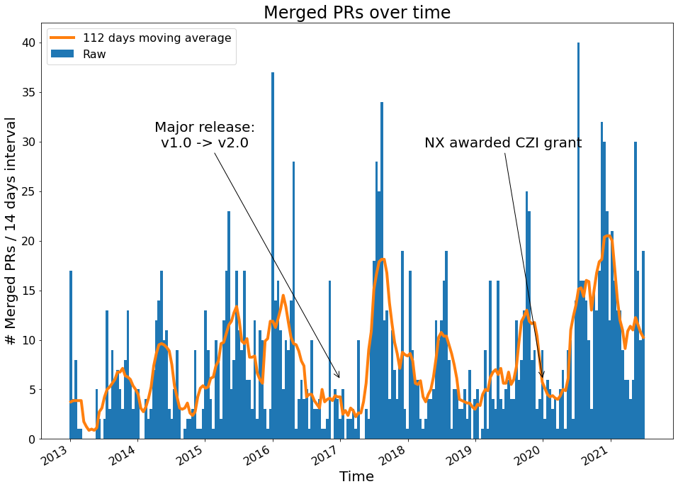
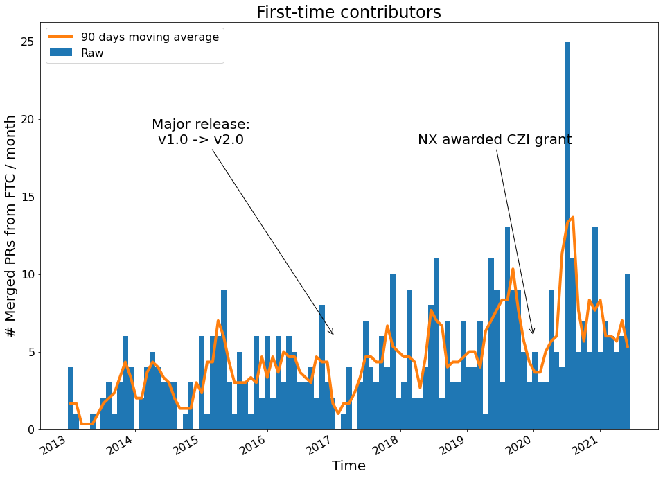

NetworkX Pull Request Analysis¶
Some basic analysis of the development history of NetworkX vis-a-vis pull requests.
import numpy as np
import matplotlib.pyplot as plt
import json
# Some matplotlib settings
mpl_params = {
"axes.titlesize": 24,
"axes.labelsize": 20,
"xtick.labelsize": 16,
"ytick.labelsize": 16,
"lines.linewidth": 4,
"legend.fontsize": 16,
"figure.figsize": (16, 12),
}
plt.rcParams.update(mpl_params)
import warnings
warnings.simplefilter("ignore")
fname = "../data/prs.json"
with open(fname, 'r') as fh:
data = json.loads(fh.read())
# Helper function for annotating plots with important project dates
def annotate_with_dates(ax):
"""Annotate axes with important dates from the project history.
.. warning::
Dates are approximate!
"""
# 1.0 -> 2.0 transition
x = np.datetime64("2017-01")
yt = 0.7 * ax.get_ylim()[-1]
ax.annotate(
"Major release:\nv1.0 -> v2.0",
xy=(x, 6),
xytext=(np.datetime64("2015-01"), yt),
arrowprops={"arrowstyle": "->"},
ha='center',
fontsize=20,
)
# CZI Grant
x = np.datetime64("2020-01")
ax.annotate(
"NX awarded CZI grant",
xy=(x, 6),
xytext=(np.datetime64("2019-06"), yt),
arrowprops={"arrowstyle": "->"},
ha='center',
fontsize=20,
)
Note
The date annotations for project milestones (e.g. v2.0 release, CZI grant award date) should be interpreted as approximations spanning a roughly 6-month interval.
Merged pull requests over time¶
merged_prs = [d for d in data if d['node']['state'] == 'MERGED']
merge_dates = np.array([r['node']['mergedAt'] for r in merged_prs], dtype=np.datetime64)
binsize = np.timedelta64(14, 'D')
date_bins = np.arange(merge_dates[0], merge_dates[-1], binsize)
h, be = np.histogram(merge_dates, date_bins)
bc = be[:-1] + binsize / 2
smoothing_interval = 8 # in units of bin-width
fig, ax = plt.subplots()
ax.bar(bc, h, width=binsize, label="Raw")
ax.plot(
bc,
np.convolve(h, np.ones(smoothing_interval), 'same') / smoothing_interval,
label=f"{binsize * smoothing_interval} moving average",
color='tab:orange',
)
fig.autofmt_xdate()
ax.set_title('Merged PRs over time')
ax.set_xlabel('Time')
ax.set_ylabel(f'# Merged PRs / {binsize} interval')
ax.legend();
annotate_with_dates(ax)

Number of First-Time Contributors over time¶
first_time_contributor = []
prev_contrib = set()
for record in merged_prs:
try:
author = record['node']['author']['login']
except TypeError: # Author no longer has GitHub account
first_time_contributor.append(None)
continue
if author not in prev_contrib:
first_time_contributor.append(True)
prev_contrib.add(author)
else:
first_time_contributor.append(False)
# Object dtype for handling None
first_time_contributor = np.array(first_time_contributor, dtype=object)
# Focus on first time contributors
ftc_mask = first_time_contributor == True
ftc_dates = merge_dates[ftc_mask]
binsize = np.timedelta64(30, 'D')
date_bins = np.arange(merge_dates[0], merge_dates[-1], binsize)
h, be = np.histogram(ftc_dates, date_bins)
bc = be[:-1] + binsize / 2
smoothing_interval = 3 # in units of bin width
fig, ax = plt.subplots()
ax.bar(bc, h, width=binsize, label="Raw")
ax.plot(
bc, np.convolve(h, np.ones(smoothing_interval), 'same') / smoothing_interval,
label=f"{binsize * smoothing_interval} moving average",
color="tab:orange",
)
fig.autofmt_xdate()
ax.set_title('First-time contributors')
ax.set_xlabel('Time')
ax.set_ylabel('# Merged PRs from FTC / month')
ax.legend()
annotate_with_dates(ax)
